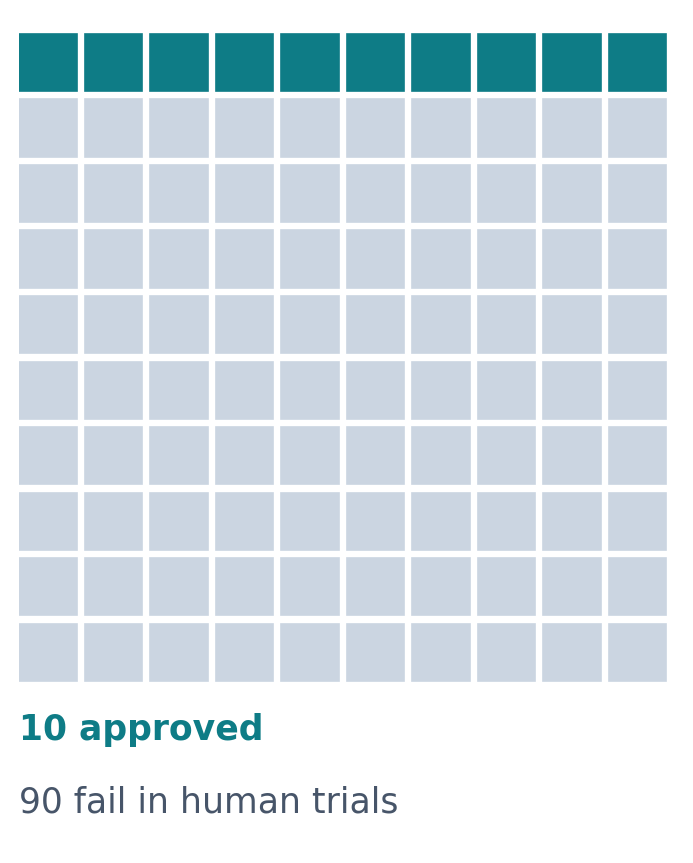

Lecture 12 — Animal Ethics
Part A: Moral Status of Animals and the Ethics of Research
1 Every Drug You’ll Ever Give
1.1 A Case to Sit With
You just joined your hospital’s animal-research committee. Your first protocol asks to test a new painkiller, one that could help your own patients. The plan: first in mice, then, if it works, in a small group of monkeys, who will be euthanized at the end so their nerve tissue can be studied.
You will give this drug to patients someday if it passes. Tonight you vote on whether it gets made.
- How do you vote tonight: yes, no, or not yet? What is the one thing that would flip your vote?
- Does it matter that the animals are monkeys rather than mice? Think of an animal you have known well: a pet, a farm animal, a working animal. Does knowing it change your vote? Should it?
1.2 After You’ve Discussed
Note
Most people who use a medicine without a second thought hesitate when asked to approve the research behind it. That hesitation is not hypocrisy. It is two real duties pulling apart: a duty to the patients who need the drug, and a duty to the animals who pay for it.
This lecture gives you tools to hold both at once: a way to ask which animals matter, how much, and what that permits, instead of choosing a slogan and defending it.
1.3 Today
By the end of Part A, you will be able to:
- Define moral status and speciesism, and explain the argument from marginal cases.
- Compare what Kant, Korsgaard, Singer, Regan, and Cohen say we owe animals.
- Explain the 3 Rs, the translation gap, and how an IACUC reviews research, using primates as the hard case.
2 Who Counts, and How Much?
2.1 What “Moral Status” Means
Before we ask how to treat animals, we need a prior idea: moral status.
- A being has moral status when it matters for its own sake: we owe duties to it, not just duties about it.
- A rock has none. A person has full moral status.
- The whole debate is about what earns status, and how much. The usual candidates are being alive, being sentient (able to feel pain and pleasure), and being rational or self-aware.
Pick a criterion and you have, without noticing, sorted every living thing into “counts” and “doesn’t.”
2.2 Speciesism: the Word and the Charge
In 1970 the psychologist Richard Ryder coined speciesism; Peter Singer made it famous (Singer 1975).
The charge
Giving less weight to a being’s interests just because of its species is like racism or sexism: a bias for “our own kind” dressed up as a principle. A pig’s pain is as real as a person’s.
The reply
Species membership does track real differences: rationality, moral agency, belonging to a moral community. Whether that reply works is what the rest of this section argues about.
2.3 The Argument from Marginal Cases
The hardest problem for any view that draws the line at rationality.
- Suppose moral status requires reason, language, or planning for the future. Many adult animals lack these, so they don’t fully count.
- But some humans lack them too: newborns, people with advanced dementia, people with severe cognitive disability. They are the “marginal cases.”
- We rightly give these humans full moral status. So either the criterion is wrong, or we must say what makes the human cases different without simply saying “because they’re human,” which would be speciesism.
The argument doesn’t settle the debate. It forces every side to say exactly why its line falls where it does.
2.4 The Kantian Line
Kant: duties about animals (Kant 1997)
- Only rational agents are “ends in themselves,” so we have no direct duties to animals.
- But cruelty is still wrong, because it corrupts us. A man who shoots his loyal old dog “damages in himself” the kindness he owes other people.
- This view still shapes law that bans cruelty while permitting nearly any use.
Korsgaard: Kant, repaired (Korsgaard 2018)
- Christine Korsgaard, a leading Kantian, argues Kant got animals wrong.
- We value ourselves as ends because things matter to us. But things matter to animals too.
- So honest Kantianism yields direct duties to animals, our fellow creatures.
2.5 Singer: Can They Suffer?
The Equal-Consideration Argument
After Peter Singer, Animal Liberation (1975)
- If a being can suffer, it has an interest in not suffering.
- Equal interests deserve equal moral weight, whoever has them.
- Many animals can suffer as humans can.
- So their suffering counts equally, and discounting it for being an animal’s is speciesism.
What follows (Singer 1975)
- Factory farming fails at once: vast suffering for the minor interest of cheaper meat.
- Research is harder. Singer asks: would you run this study on a human with similar mental capacities? If not, it needs another justification.
- As a utilitarian, Singer allows that a big enough benefit could justify a study. The next thinker rejects exactly that.
2.6 Rights: Regan vs. Cohen
Tom Regan: animals have rights (Regan 1983)
Many animals are subjects-of-a-life: they have beliefs, desires, memory, and a future that matters to them. Such beings have inherent value and a right not to be used merely as a means. So research on them is wrong, even when it helps many. Rights are not for trading.
Carl Cohen: rights need a moral community (Cohen 1986)
Rights arise among beings who can make moral claims on each other. Animals can’t recognize duties, so they hold none. Favoring our own species is like favoring our own children: moral, not bias. So humane, regulated research is a moral good.
Cohen’s soft spot is the marginal cases. He answers that rights belong to humans as a kind, even those who can’t exercise them. Is that a principle, or speciesism with better manners?
2.7 Four Views, Four Verdicts
| Eating meat | Animal research | Pets | Wildlife | |
|---|---|---|---|---|
| Kant / Cohen | permitted | permitted, even good | fine if not cruel | manage for human use |
| Singer | wrong (factory farms) | only if benefit clearly outweighs | fine if welfare met | reduce suffering overall |
| Regan | wrong | wrong, full stop | guardianship, not ownership | respect, don’t exploit |
| Korsgaard | deeply troubling | rarely justified | a real relationship of duty | owed direct concern |
Read across a row to see a view’s reach; read down a column to see how much a verdict depends on the theory behind it.
2.8 Thought Question
A wildfire is closing in. In one shelter are five dogs; in another, one human stranger. You have time to open only one door before the fire arrives.
- What do you do, and which thinker best matches your reasoning?
- Singer says equal interests count equally. Does that mean five animal lives can outweigh one human life? If you resist that, why?
- Would your answer change if the one human were someone you loved? Should it?
2.9 Make It Contemporary
The science keeps moving the line. Primatologist Frans de Waal documented chimps that plan, deceive, and grieve; later work found that octopuses, which are invertebrates, show problem-solving and apparent pain responses (Waal 2016).
In 2022, after a government-commissioned scientific review, the United Kingdom’s Animal Welfare (Sentience) Act recognized octopuses, crabs, and lobsters as sentient.
- Have you ever changed what you eat, buy, or do because of something you learned about an animal? What did it take? If not, what would it take?
- Should the law track the latest cognitive science, or stay simpler and more stable?
2.10 After You’ve Discussed
Note
A distinction the views above quietly rely on: moral agents vs. moral patients.
A moral agent can be held responsible: it can have duties, deserve blame, make claims. A moral patient cannot act morally but can still be wronged (a newborn, a dog). Cohen ties rights to agency; Regan and Korsgaard insist patients matter regardless.
That is why smart people reach opposite verdicts from the same facts: they disagree about whether being a patient is enough to be owed direct duties.
3 From Theory to the Lab
3.1 Why Animal Research Happens
For this audience, the stakes are on your med cart.
- Insulin was isolated in dogs in 1921. The first patient, a dying 14-year-old, recovered within days.
- Polio and COVID-19 vaccines were tested in monkeys before people.
- Animal testing has long been required before most drugs reach human trials, the very trials you met in research ethics.
The ethical question is not whether research helped us, but what it costs, and whether each use is justified.

Charles Best and Frederick Banting with a dog from the insulin experiments, Toronto, 1921. Library and Archives Canada. Public domain.
3.2 Two Founding Scandals
Important
Silver Spring, Maryland, 1981
Alex Pacheco volunteered in Edward Taub’s lab, which severed nerves in macaques’ limbs to study recovery. He photographed filthy cages and untreated wounds and took them to police.
Taub was convicted on one count of denying a monkey veterinary care. In 1983 Maryland’s highest court reversed: the state cruelty law, it ruled, did not reach federally regulated research. The photos launched PETA.
Important
Harry Harlow, 1950s–60s
Harlow raised infant monkeys in isolation to study attachment. Deprived of mothers, they clung to cloth dummies, and many were left severely, permanently damaged.
The work changed how orphanages and hospitals cared for infants. It is also, to many, suffering no result could justify.
The question both leave: how much harm may knowledge cost, and who decides?
3.3 The 3 Rs
In 1959, two British scientists proposed the framework that still governs humane research (Russell and Burch 1959). The goal is not to end research but to shrink its harm at every step.
| R | The question it asks | A concrete move |
|---|---|---|
| Replacement | Could this be done without animals? | cell cultures, organoids, computer models, human volunteers |
| Reduction | Are we using too many? | better statistics; sharing tissue across studies |
| Refinement | Are we causing avoidable harm? | anesthesia, pain control, humane endpoints, enrichment |
A humane endpoint ends a study, and the animal’s life, before suffering peaks, rather than waiting for death as the data point.
3.4 Does the Research Even Work?
Research is a cost-benefit trade. But a benefit you don’t get can’t justify a harm.
About 9 in 10 drugs that enter human trials, after testing largely in animals, never win approval, mostly for lack of effect or for toxicity (Sun et al. 2022).
That is the translation gap. It doesn’t make research worthless; it raises the burden of proof.
3.5 Replacing Animals: How Far, How Fast
- Works now: human cells, “organs-on-chips,” and computer models handle much toxicity screening.
- Not yet: a whole body (an immune system, a developing brain, a years-long disease) is hard to simulate.
- Policy is moving. FDA aims to make animal studies “the exception rather than the norm” (FDA 2025); NIH no longer funds animal-only research calls (NIH 2025); the EU adopted a phase-out roadmap in 2026 (European Commission 2026).
The question is now how fast to replace, and who bears the risk of moving too soon.

A lung-on-a-chip, lined with living human cells. Wyss Institute, Harvard, via NIH-NCATS. CC BY 2.0.
3.6 IACUC: The IRB for Animals
After Silver Spring, 1985 amendments to the Animal Welfare Act required every research institution to have an IACUC (Institutional Animal Care and Use Committee).
- It must approve every animal study before it begins, and it inspects facilities twice a year.
- By law it includes a veterinarian, a scientist, a nonscientist, and a member from outside the institution, so the committee isn’t only judging itself.
- A protocol must justify the species and exact number of animals, document a search for alternatives, and rate each procedure’s pain category. The most scrutinized: pain left untreated because relief would ruin the data.
3.7 IACUC vs. IRB
| IRB (humans) | IACUC (animals) | |
|---|---|---|
| Protects | the research subject | the research animal |
| Core consent question | did the subject agree? | (animals can’t consent) |
| Substitute safeguard | informed consent, voluntariness | the 3 Rs, veterinary oversight |
| Shared engine | weigh benefits vs. harms; independent review; no self-policing | same |
The deepest difference is consent. A human can refuse; an animal never can. So the moral weight an IRB places on agreement shifts, for animals, onto someone else minimizing their harm.
4 The Hardest Case: Primates
4.1 Why Primates Are Used, and Contested
- Used because they are so like us: a monkey’s visual cortex maps how human vision and memory work, and macaques were central to testing HIV treatments and COVID-19 vaccines.
- Contested for the same reason: tool use, planning, self-recognition, complex social bonds, and lives of 30+ years, often spent entirely in a lab.
On every criterion any theory uses (sentience, subject-of-a-life, a good of one’s own), primates score high.

NIH scientists Harry Meyer Jr. and Paul Parkman and technician Rudyard Wallace examine a laboratory monkey during rubella vaccine research, 1966. NIH, via National Library of Medicine. Public domain.
4.2 U.S. Research Animals by Species

The chart hides the biggest fact: mice and rats bred for research, by far the most-used animals, and fish are excluded from the law, so no one counts them officially (USDA APHIS 2026).
4.3 The 2015 NIH Chimpanzee Decision
Important
The end of invasive chimp research in the U.S.
In 2011 the Institute of Medicine concluded that almost all biomedical research on chimpanzees was no longer necessary: alternatives had caught up (Institute of Medicine 2011). In 2015 NIH announced it would retire its remaining research chimpanzees, ending federal support for invasive chimp studies (National Institutes of Health 2015).
Chimps had helped develop the hepatitis B vaccine. The judgment was not that they never helped, but that the benefit no longer justified the cost. Replacement succeeded.

Valentina Storti, via Wikimedia Commons. CC BY 2.0.
4.4 Thought Question
You are back on the IACUC. A respected neuroscientist submits a protocol: implant electrodes in the brains of four macaques to study how memory forms. The work could, in a decade, help patients with Alzheimer’s. The monkeys will live in the lab for years and be euthanized at the end.
- How do you vote? What single fact would most change it: fewer animals? guaranteed pain control? a stronger medical payoff?
- Cohen says approve it; Regan says never. Whose burden of proof feels heavier to you, and why?
4.5 After You’ve Discussed
Note
A distinction that cuts through most research debates: necessary vs. avoidable suffering.
Almost everyone agrees we may not impose avoidable suffering. The fight is over “necessary”: necessary for what, and judged by whom? The chimp decision turned on a finding that the suffering had become avoidable, because alternatives existed.
So progress in the 3 Rs doesn’t just make research kinder. It shrinks the set of harms that can still be called necessary, and raises the bar every new protocol must clear.
4.6 Wrap-Up
We began with a vote and a hesitation: we use the fruits of animal research while flinching at approving it. Behind the flinch is a real question, which beings have moral status, and how much, that Kant, Korsgaard, Singer, Regan, and Cohen answer very differently. In the lab, the 3 Rs try to shrink harm, the translation gap raises the burden of proof, and the IACUC enforces the rules. The chimp retirement shows the system moving: as alternatives improve, fewer harms count as “necessary.” Next: the food system, and pigs grown for human organs.
Paired case: David Bennett and the First Pig-Heart Transplant
4.7 Review Questions
Recall
State the three Rs and explain what an IACUC must verify before approving a study. Which R was decisive in the 2015 NIH chimpanzee decision?
Apply
A lab wants to test a cosmetic ingredient for skin irritation using rabbits. Run the proposal through Singer’s and Regan’s views, and through the first R. Where would each say the proposal fails or passes?
Debate
Cohen argues that favoring our own species is moral, not bias, like favoring our own children. Is the analogy sound? Defend your answer, using the argument from marginal cases.
4.8 Key Terms
- Moral status — mattering for one’s own sake.
- Sentience — the capacity to feel pain and pleasure; Singer’s criterion.
- Speciesism — discounting a being’s interests merely because of its species.
- Marginal cases — any criterion that excludes animals also excludes some humans.
- Indirect duties — Kant: duties “about” animals are really duties to people.
- Subject-of-a-life — Regan: a being with beliefs, desires, memory, and a future.
- Moral agent vs. patient — one who can have duties vs. one who can be wronged.
- The 3 Rs — Replacement, Reduction, Refinement (Russell & Burch, 1959).
- Translation gap — the frequent failure of animal results to predict human outcomes.
- IACUC — the committee that reviews animal research.
- Humane endpoint — ending a study before an animal’s suffering peaks.
4.9 Further Reading
- Singer, Peter. Animal Liberation Now. Harper Perennial, 2023 (updated edition of the 1975 classic).
- Korsgaard, Christine. Fellow Creatures: Our Obligations to the Other Animals. Oxford University Press, 2018.
- de Waal, Frans. Are We Smart Enough to Know How Smart Animals Are? Norton, 2016.
4.10 References
Cohen, Carl. 1986. “The Case for the Use of Animals in Biomedical Research.” New England Journal of Medicine 315 (14): 865–70. https://doi.org/10.1056/NEJM198610023151405.
European Commission. 2026. Roadmap Towards Phasing Out Animal Testing for Chemical Safety Assessments. Communication from the Commission, C(2026) 3497 final, 1 June 2026. https://single-market-economy.ec.europa.eu/sectors/chemicals/reach/roadmap-towards-phasing-out-animal-testing_en.
FDA. 2025. Roadmap to Reducing Animal Testing in Preclinical Safety Studies. FDA, April 10, 2025. https://www.fda.gov/media/186092/download.
Institute of Medicine. 2011. Chimpanzees in Biomedical and Behavioral Research: Assessing the Necessity. National Academies Press. https://doi.org/10.17226/13257.
Kant, Immanuel. 1997. Lectures on Ethics. Cambridge University Press.
Korsgaard, Christine M. 2018. Fellow Creatures: Our Obligations to the Other Animals. Oxford University Press.
National Institutes of Health. 2015. NIH Will No Longer Support Biomedical Research on Chimpanzees. NIH Director’s statement. https://www.nih.gov/about-nih/who-we-are/nih-director/statements/nih-will-no-longer-support-biomedical-research-chimpanzees.
NIH. 2025. NIH Funding Announcements to Align with NIH Initiative to Prioritize Human-Based Research. NIH Extramural Nexus, July 10, 2025. https://grants.nih.gov/news-events/nih-extramural-nexus-news/2025/07/nih-funding-announcements-to-align-with-nih-initiative-to-prioritize-human-based-research.
Regan, Tom. 1983. The Case for Animal Rights. University of California Press.
Russell, William M. S., and Rex L. Burch. 1959. The Principles of Humane Experimental Technique. Methuen.
Singer, Peter. 1975. Animal Liberation. HarperCollins.
Sun, Duxin, Wei Gao, Hongxiang Hu, and Simon Zhou. 2022. “Why 90% of Clinical Drug Development Fails and How to Improve It?” Acta Pharmaceutica Sinica B 12 (7): 3049–62. https://doi.org/10.1016/j.apsb.2022.02.002.
USDA APHIS. 2026. Research Facility Annual Usage Summary Report, Fiscal Year 2025. USDA APHIS Animal Welfare Act reports, data as of May 28, 2026. https://www.aphis.usda.gov/sites/default/files/fy2025-research-animal-use-summary.pdf.
Waal, Frans de. 2016. Are We Smart Enough to Know How Smart Animals Are? W. W. Norton.